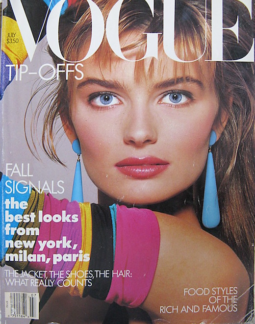
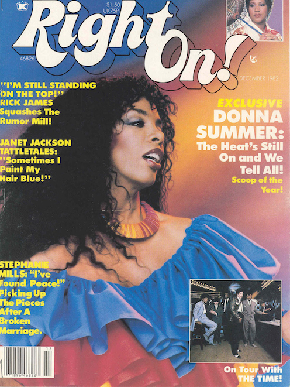
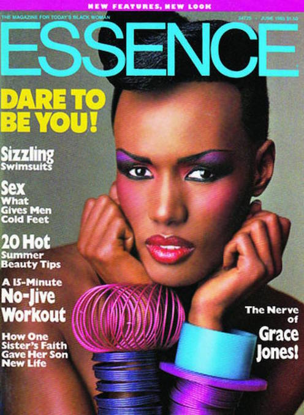
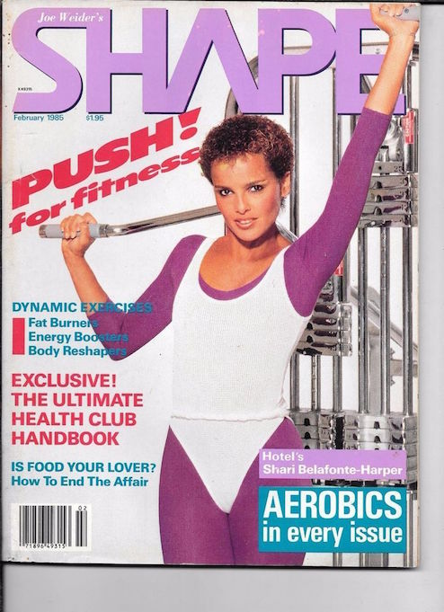
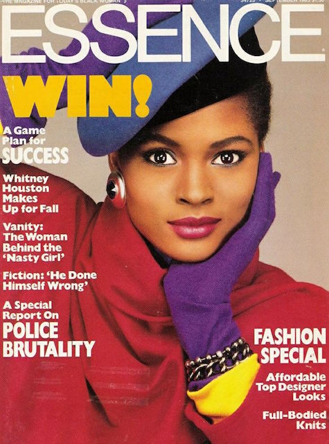
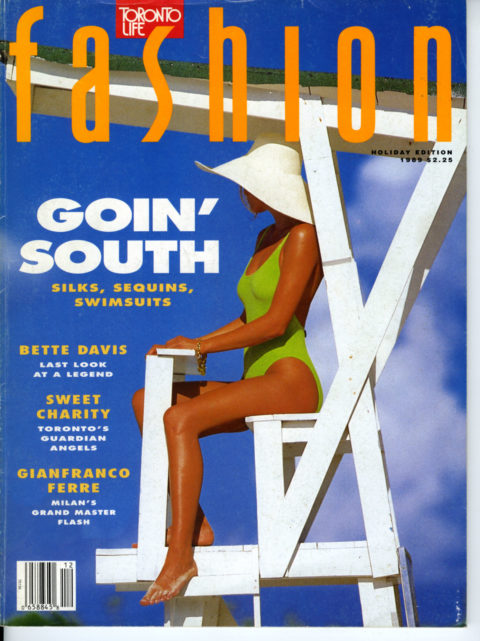

1980
1980 The Age of Creativity
But by 1984, pop stars such as Madonna and Cyndi Lauper brought a new sense of style to the decade, one that focused on pushing boundaries with creative patterns, funky color combinations, and unique styles. Women began sporting skin-tight cotton leggings, pairing them with chunky sweaters and oversized, off-the-shoulder tops.






HOME